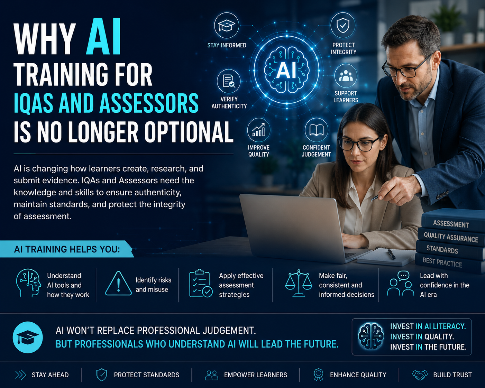

Artificial Intelligence is changing how learners create, research, and submit evidence. IQAs and Assessors increasingly require AI awareness, authenticity verification skills, and professional confidence to protect assessment integrity.

Artificial Intelligence is rapidly transforming education, assessment, and quality assurance across schools, colleges, universities, and vocational training environments.
Tools such as ChatGPT, Microsoft Copilot, and Gemini are increasingly being used by learners to generate written content, improve assignments, conduct research, and support learning activities.
While these technologies offer significant opportunities, they also create major challenges for assessors, Internal Quality Assurers (IQAs), and training providers responsible for maintaining assessment integrity and educational standards.
Learners can now produce highly structured and academically convincing responses within seconds, sometimes without fully understanding the content being submitted.
In many situations, learners may use AI tools legitimately to improve grammar, structure, accessibility, or understanding of complex topics.
The real challenge lies in distinguishing responsible AI-assisted learning from situations where over-reliance on AI undermines assessment validity and authenticity.
Professional discussions, workplace observations, scenario-based questioning, and practical demonstrations are becoming increasingly important within AI-aware assessment environments.
These approaches allow assessors to explore learner understanding more deeply rather than relying solely on written submissions.
Internal Quality Assurance is no longer limited to checking paperwork or confirming whether assessment criteria have technically been achieved.
Modern IQA practice increasingly involves:
This represents a major shift in professional practice across modern education.
When used responsibly, AI can improve accessibility, reduce administrative workload, support learners with language barriers, assist with resource creation, and enhance educational efficiency.
The challenge is ensuring educational professionals have the training and confidence to manage AI responsibly and ethically.
Another major challenge across the education sector is inconsistency.
Some assessors are highly confident using AI technologies, while others may have limited understanding of how these systems work.
Without proper CPD and standardisation, centres risk:
Artificial Intelligence is transforming assessment and quality assurance rapidly. Educational professionals who fail to develop AI awareness may increasingly struggle to maintain effective assessment and quality assurance practices within evolving digital learning environments.
AI training is therefore no longer an optional professional development activity for assessors and IQAs. It is becoming an essential requirement for protecting educational quality, maintaining assessment integrity, supporting learners responsibly, and ensuring qualifications continue to reflect genuine competence within the modern AI era.